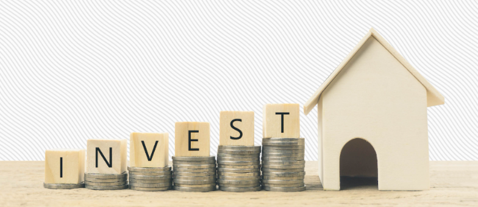

Investing In Crypto And Real Estate
💰 Investing in Cryptocurrency vs. Real Estate:

A Modern Wealth-Building Guide
In today’s fast-evolving financial landscape, two investment avenues
have captured the attention of both seasoned investors and curious
newcomers: cryptocurrency and real estate. While they operate in
vastly different realms—one digital and decentralized, the other
tangible and rooted in physical assets—they both offer unique paths
to wealth creation. Understanding their strengths, risks, and strategic
roles can help you make smarter decisions with your money
🚀 Cryptocurrency: High Risk, High Reward
Cryptocurrency, led by giants like Bitcoin and Ethereum, represents
a revolutionary shift in how we think about money. It’s decentralized,
borderless, and often volatile—but that volatility can be a goldmine for the bold.
🔍 Pros:
Liquidity: Crypto assets can be bought and sold 24/7, offering unmatched flexibility.
Accessibility: Anyone with a smartphone and internet connection can start investing.
Potential for High Returns: Early adopters of Bitcoin saw exponential growth.
Innovation: Blockchain technology powers smart contracts, NFTs, and DeFi platforms.
⚠️ Cons:
Volatility: Prices can swing wildly in minutes.
Regulatory Uncertainty: Governments are still figuring out how to regulate crypto.
Security Risks: Hacks, scams, and lost private keys can wipe out holdings.
Lack of Tangibility: Crypto is purely digital, which can feel abstract to some investors.
🏡 Real Estate:
Stability and Long-Term Growth
Real estate has long been considered one of the most reliable ways to build wealth.
Whether it’s residential, commercial, or rental property, it offers tangible value
and consistent income potential.
🔍 Pros:
Appreciation: Property values tend to rise over time, especially in growing markets.
Passive Income: Rental properties can generate steady cash flow.
Tax Benefits: Depreciation, mortgage interest deductions, and other perks.
Tangible Asset: You can see, touch, and improve your investment.
⚠️ Cons:
High Entry Cost: Real estate often requires significant upfront capital.
Illiquidity: Selling property can take weeks or months.
Management Hassles: Tenants, maintenance, and legal issues can be time-consuming.
Market Sensitivity: Economic downturns can affect property values and rental demand.
🧩 The Hybrid Approach
Many savvy investors are now diversifying across both asset classes. For example:
Use crypto for short-term speculative gains.
Reinvest profits into real estate for long-term stability.
Hedge against inflation by holding both digital and physical assets.
🏁 Final Thoughts
Investing in crypto and real estate isn’t an either/or decision—it’s
about balance, timing, and understanding your personal financial journey.
Crypto offers speed and innovation, while real estate delivers stability
and legacy. Together, they can form a powerful portfolio that thrives in
both bull and bear markets.
If you're ready to dive deeper into either space, I can help you explore strategies,
platforms, or even analyze specific opportunities. Just say the word
Home